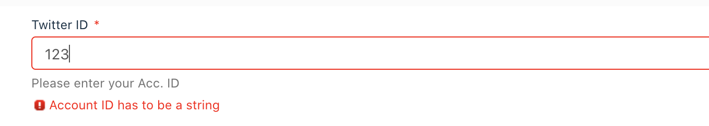
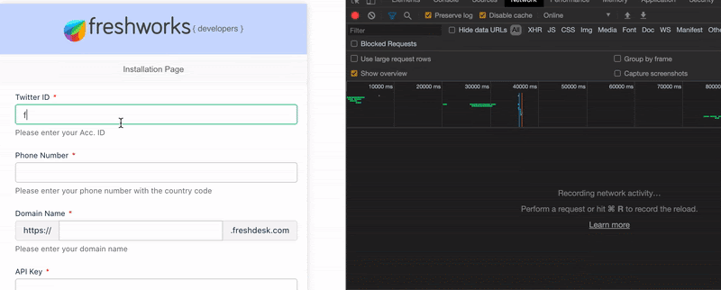
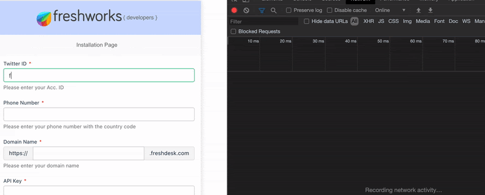
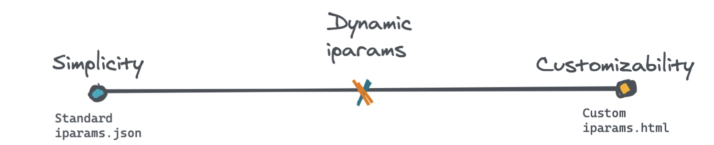

Installation parameters, as the name suggests, allows us to obtain certain values during the time of App Installation. Conceptually, these values are configuration details that the app requires to function properly. This is similar to how cab-hailing apps (E.g. Uber, Ola) require user's contact & location details or how social media apps (E.g. Instagram, Twitter) require us to choose topics that we are interested in before we start using them. Installation parameters (iparams) can range from simple text inputs to complex UI components.
Freshworks Developer Platform offers simplicity and sophistication when it comes to installation pages.
iparams.json offers a declarative syntax for defining iparam fields. It abstracts the UI and offers a simple JSONic interface for effortless development. iparams.html allows complete customization of installation pages. However, the development and maintenance effort also increases.Dynamic Installation pages offer the best of both worlds. Retaining the simplicity of iparams.json and the customizability of iparams.html, Freshworks App developers can make use of iparam callbacks to build top-notch Installation pages without breaking a sweat.
How to,
git clone https://github.com/freshworks/marketplace-sample-apps
cd marketplace-sample-apps/Freshworks-Samples/App-Development-Features/Configuration-Features/dynamic_iparamsMuch of the dynamicity can be owed to event callbacks in iparams.json. We can subscribe to specific event(s) via callbacks associated with a particular iparam field. As a part of the iparam field definition, one can include events property that will contain a list of events and their listeners.
For instance, consider the following snippet. As you can notice, for the following iparams - twitter_id & contact_methods, we can notice an additional property called events. It contains an array of event callbacks designated for iparam events. At the time of writing this document, there was only one event,`change`, associated with iparam fields. As the name implies, the change event is triggered every time the value of the associated iparam field changes.
{
"twitter_id": {
"display_name": "Twitter ID",
"description": "Please enter your Acc. ID",
"type": "text",
"required": true,
"events": [{
"change": "checkAccountID"
}]
},
"mobile": {
"display_name": "Phone Number",
"description": "Please enter your phone number with the country code",
"type": "phone_number",
"required": true
},
"domain_name": {
"display_name": "Domain Name",
"description": "Please enter your domain name",
"type": "domain",
"type_attributes": {
"product": "freshdesk"
},
"required": true
},
"api_key": {
"display_name": "API Key",
"description": "Please enter your api_key",
"type": "api_key",
"secure": true,
"required": true,
"type_attributes": {
"product": "freshdesk"
}
},
"contact_methods": {
"display_name": "Preferred Contact Method",
"description": "Please select the preferred contact methods",
"type": "multiselect",
"options": [
"Mobile",
"Twitter ID"
],
"events": [{
"change": "contactMethodChanged"
}],
"default_value": [
"Mobile",
"Twitter ID"
]
}
}
If you are wondering where the event listeners associated with the iparam fields are situated, Look no further than the config/assets/iparams.js file!
Inside the iparams.js file, we can define the event callback methods that are associated with the iparam fields. The logic inside the method gets executed when a particular event is triggered. In our case, we listen to the `change` event. Whenever the field value is modified, the callback will be fired. Validations and field manipulations can be done by returning appropriate promises and making use of utility methods.
For instance, let's take a look at the `checkAccountID` callback method. This method gets executed every time a value is entered in the twitter_id iparam field
/**
* Using this iparam callback function, we are validating the details using a third-party API.
*
* @param {string} newValue The new value of the iparam field
*/
function checkAccountID(newValue) {
//Input type validation
if (!isNaN(newValue)) {
return Promise.reject("Account ID has to be a string");
}
return validateWithAPI(newValue);
}
/**
* In this case, for example, we are making use of `httpbin.org` to return 200 OK status.
* In real-world, this could be a valid third-party API that can return an appropriate status code indicating the status of validation
* Payload and other options can be specified using `options`
* Notice the presence of the debounce logic to avoid rate-limiting issues.
*
* @param {string} value
*/
function validateWithAPI(value) {
//Assume it is the validation/resource endpoint
var url = "https://httpbin.org/status/200";
var options = {
body: JSON.stringify({
param: value
})
};
var p = new Promise(function (resolve, reject) {
// Do not hit the validation API immediately upon change.
// Wait for 500ms and if the user hasn't typed anything during that time, make a call
clearTimeout(timeout);
timeout = setTimeout(function () {
client.request.post(url, options).then(
function (data) {
// Upon success, just resolve
resolve();
},
function (error) {
// Upon failure - send an appropriate validation error message
reject("This Account ID does not exist. Please enter the right one");
}
);
}, 500);
});
return p;
}
In the above snippet, we see that by returning a rejected promise, we symbolize errors during validation. The rejection reason should be a string that will eventually appear as an error message under the field. For instance, during input validation.

On the other hand, we can return a resolved promise to symbolize successful validation.
Also, one can also make use of platform features (Request method, in this case) by obtaining the client object.
app.initialized().then(
function (_client) {
//If successful, register the app activated and deactivated event callback.
window.client = _client;
},
function (error) {
//If unsuccessful
console.log(error);
}
);Now that we have the client object, we can proceed to make use of the Request method. We have successfully made use of the Request method inside `validateWithAPI` to call a third party API based on the new value that was entered in the twitter_id field. Note that this is not an actual verification with Twitter. We are calling a dummy API that echoes back the status code that we have intended to return. In a real-world scenario, this could be an actual third party API with its own endpoint and payload structure.
`https://httpbin.org/status/200` will return 200 HTTP status indicating success. In this case, the promise resolves.`https://httpbin.org/status/500` will return 500 HTTP status indicating an error. In this case, the promise would be rejected. Note that firing API calls on every change could burn out the rate-limit. Consider using a debounce logic with an appropriate timeout in such situations. Shown below is the difference between using and not using debounce logic.
Without debounce logic

With debounce logic

Based on the promise resolution or rejection, an appropriate response can be sent as the iparams validation message. In our sample code, as the API returns with status code `200 OK`, it will return a resolved promise indicating successful validation.
Utility methods allow us to perform two important things
As a handy reference, here is an exhaustive list of attributes that can be used along with utility methods to either get or set them.
General syntax:
// For setting the properties
utils.set(‘<iparam_key>', {<attribute>: <value>});
// For getting the properties
utils.get(‘<iparam_key>', {<attribute>: <value>});Attribute Reference:
Attribute | Data Type | Description |
string array of strings (for iparams of the multiselect type) | Enables you to set a value for the iparam. For a multiselect iparam, enables you to set certain values as selected options. On the installation page, the selected options are populated in the iparam's input field. | |
label | string | Enables you to modify the display_name attribute value of the iparam. |
boolean | Enables you to hide the iparam from the installation page. | |
disabled | boolean | Enables you to disable the iparam on the installation page. |
required | boolean | Enables you to modify the required attribute value of the iparam. |
hint | string | Enables you to modify the description attribute value of the iparam. |
|
Valid only for iparams of the radio, multiselect, and dropdown types. | array of strings | Enables you to modify the options attribute value of the iparam. |
|
Valid only for iparams of the number type. | number | Enables you to set a validation for the minimum value that can be entered for the iparam. |
|
Valid only for iparams of the number type. | number | Enables you to set a validation for the maximum value that can be entered for the iparam. |
Utility methods can be handy when we need to perform ad hoc field manipulations based on field values. For instance, let us take a look at `contactMethodChanged()` method.
/**
* When the contact method changes, just display the options
* To set the list of possible options to choose from, use -> utils.set("<iparam_field>", { values: ['Opt1', 'Opt2', 'Opt3'] });
*/
function contactMethodChanged() {
//Let us get the selected options for contact methods
const cm = utils.get("contact_methods");
console.info(cm);
}The `contactMethodChanged()` function is invoked every time we select or deselect an option from the "Contact Methods" multi-select field.
Based on the values that are selected, we can toggle the visibility of other fields like so:
/**
* Dynamically enable / disable standard iparam fields using the utility methods
* @param {object} cm
*/
function toggleFieldsVisibility(cm) {
if (!Array.isArray(cm))
return console.error("Something went wrong while toggling field visibility");
utils.set("twitter_id", {
visible: cm.includes("Twitter ID")
});
utils.set("twitter_tags", {
visible: cm.includes("Twitter ID")
});
utils.set("tags", {
visible: cm.includes("Twitter ID")
});
utils.set("mobile", {
visible: cm.includes("Mobile")
});
}For simplicity, we just print the options to understand how it works. However, feel free to build your logic on top of this ⚡️
We learned to
iparams.json with validation callbacksiparams.jsKudos for following the tutorial until the end. If you have any queries, feel free to get in touch with us.

The Right Balance